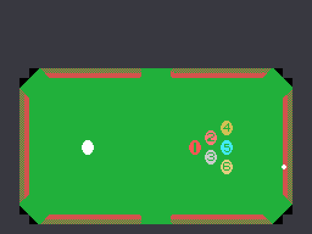

An American pool table seen from above, with six pockets, and a cue ball you use to sink the six coloured ones. You aim by moving a dot that travels around the outside of the table, and you shoot when the power bar is where you want it.
That small thing to the right of the cloth is the aiming point, and it is not decoration: it is the eighth entry of the ball array (0xE170). When you shoot, the game subtracts the cue ball's position from it, and out of that difference come the direction and the distance of the shot.
The aiming point does not move freely. It only travels along one axis at a time, whichever bit 0 of 0xE1F9 says, and that bit flips when it reaches the stops: X stays between 0x0E and 0xE1, Y between 0x36 and 0xA9. With those two rules, the places it can be are the perimeter of a rectangle surrounding the table, so aiming means picking a point on that frame.
The SPEED indicator at the bottom left does not respond to the keys. The very routine that draws it (0x5314) also advances it one step each time it is called, cycling 1, 2, 3, 1, 2, 3… The call comes in once every 64 frames, a little over a second.
So a soft or a hard shot is not decided, it is caught on the fly by pressing the button at the right moment. The cue ball's starting velocity is the power plus one times the direction vector, and its energy is 0x20 per unit.
To the right of the scoreboard there are up to four diamonds: they are the goes left to the ball in play (0xE053). You start with two, and every shot that sinks nothing spends one; when they run out, the warning sounds and the ball is lost.
You start with three spare balls and earn one when the score passes a threshold that climbs five thousand at a time (0xE052), and another every time the whole table is cleared.
Each ball is worth its number times a hundred, and that is where the multiplier comes in: for every ball sunk in a row without missing, the count doubles. The table is 1, 2, 4, 8 and 16, and it stops at 16.
The tally card shows the balls you have earned one by one at the end of the shot, each with the multiplier it got. The RATE label on the left shows, while you are aiming, the one that will apply to the next.
If the cue ball goes down a pocket, you do not just lose the turn: every ball sunk during that shot goes back on the cloth. The routine that does it (0x5A3A) removes them from the row of earned balls at the top and finds each one a free spot on the table before putting it back, starting at Y=0x70 X=0x90 and shifting eight pixels along whenever the place is taken.
Since they never reach the tally, those balls are never scored.
The menu lets you pick one or two players, and the game keeps each player's spare balls, extra-ball threshold and goes. The 1P or 2P label of whoever has the turn blinks, one frame in every thirty-two, by reading the screen itself to find out whether it was on or off: there is no blink variable.
What is not shared out is the stage number. The swap at 0x4526 skips 0xE051 on purpose, so both players advance through the same STAGE counter.
If nobody touches anything, the game runs its own demonstration, and there is no separate code for it: it measures the angle from the cue ball to the first ball still on the table, moves the aiming point until they match and then writes the fire button into the same variables where the game leaves the player's keys. It presses the button on itself.
During the attract mode, bit 6 of 0xE002 is clear, and that bit is the one that allows scoring and the one that lets sounds be requested the normal way: the demonstration neither scores nor makes a noise.